영사기능사 (2013-03-24 기출문제)
1과목: 전기일반
1. 아래의 그림과 같이 좌측의 4개의 분할된 영상의 가장자리를 Overlap 시켜 하나의 영상으로 만드는 기술을 무엇이라 하는가?
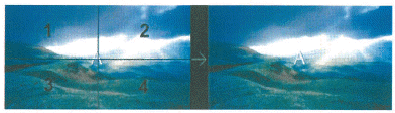
- Media Block 기술
- DLP 기술
- SXRD 기술
- Edge Blending 기술
(정답률: 알수없음)

2. 아래의 그림은 1931년 CIE가 제시한 표준 색좌표이다. 아래의 보기에서 틀린 것은?
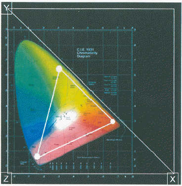
- 그림은 CIE 1931 2° 표준관찰자라고 한다.
- 평균적인 시각을 가진 사람의 시야각 2° 이내에 몰려 있는 원추세포의 반응을 가리킨다.
- X, Y, Z는 인간이 현재 보고 있는 컬러 영역이다.
- CIE 1931 색 공간은 인간의 색채 인지에 대한 연구를 바탕으로 수학적으로 정의된 최초의 색 공간이다.
(정답률: 알수없음)
3. 아래의 그림은 맥베스 차트(macbeth chart)이다. 그림에서 3번째 줄에 위치한 Blue, Green, Yellowm Magenta, Cyan에 White를 더하여 DLP의 컬러 공간을 만든 것을 무엇이라 하는가?
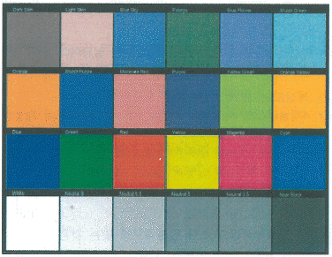
- XYZ
- P7v2
- RGB
- P3
(정답률: 알수없음)
4. 디지털시네마 서버에서 디지털시네마 영사기까지 들어오는 영상의 신호를 128bit로 암호화 하는 것을 무엇이라 하는가?
- SDI(Serial Digital Interface)
- 링크 인크립션(Link Encryption)
- 톰슨의 NextGuard 와 필립스의 Cinefence
- DMD(Digital Micromirror Device)
(정답률: 알수없음)
5. 극장 관리 시스템(Theatre Management System : TMS)의 요구 사항으로 틀린 것은?
- Central Server, Local Server, SMS을 통합적으로 관리 통제할 수 있어야 한다.
- 독자적인 방화벽 구축을 지원해야 한다.
- KDM(Key Delivery Message) File에 별도 관리가 요구 된다.
- 저장 장치의 용량은 최소 3편이상의 영화를 담을 수 있어야 한다.
(정답률: 알수없음)
6. 아래의 기름은 디지털 영사기의 컨버젼스(Convergence) 조정에 관한 것이다. 보기의 설명에서 틀린 것은?
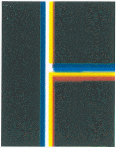
- 3개의 DMD Panel (Red, Green, Blue)을 조정하여 3개의 픽셀이 완벽하게 정렬 되도록 하며 정확한 컬러 재현이 목표이다.
- 영상의 더블 이미지 또는 음영 제거를 할 수 있다.
- “Algnment” 또는 “Framing” Test Pattern을 사용한다.
- RGB가 하나로 될 경우 Black이 된다.
(정답률: 알수없음)
7. 네트워크에서 Tracert는 목적지까지의 경로를 출력해주는 명령어이다. 아래의 그림에서 17라인에서부터 30라인 까지 있는 *의 표시는 무엇인가?
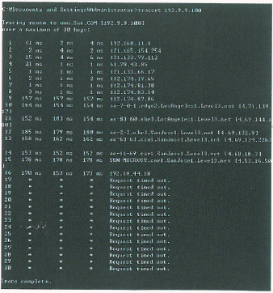
- 방화벽
- TCP/IP 접속 정상
- TCP/IP 접속 Error
- nslookup
(정답률: 알수없음)
8. 디지털영사기에 사용되는 디지털 디바이스(Digital Device)의 픽셀 피치(Pixel Pitch)는
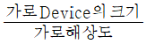
로 계산 된다. 다음 보기에서 디지털 디바이스(Digital Device)의 픽셀 피치(Pixel Pitch)가 틀린 것은?- 0.98″ DMD의 Pixel Pitch 10.75 um
- 1.25″ DMD의 Pixel Pitch 13.68 um
- 1.38″ DMD의 Pixel Pitch 7.55 um
- 1.55″ LCoS의 Pixel Pitch 9.22 um
(정답률: 알수없음)
9. 인간의 눈이 가로 방향으로 65mm 정도 떨어져서 존재하기 때문에 나타나게 되는 양안시차(binocular disparity)는 입체감의 가장 중요한 요인이 된다. 이 양안시(bibocular Vision) 상태에서 두 눈의 시선이 모이는 것을 무엇이라 하는가?
- 애너그래프(Anaglyph)
- 폭주(Convergence)
- 누설(Crosstalk)
- 원형 편광(Circular-Polarized)
(정답률: 알수없음)
10. 오디오 위원회인 CD28.6과 DC28.10 산하의 오디오 특별 그룹은 기초적이지만 꼭 필요한 디지털시네마 오디오 특성들을 제안했다. 아래의 보기 중 디지털 오디오의 표준이 아닌 것은?
- 비트깊이 - 샘플당 24비트(BIT DEPTH-24BIT)
- 샘플레이트 - 초당 그리고 채널당 48,000샘플
- 채널수 - 5.1채널
- 디지털 래퍼런스 레벨 : 입력과 출력은 –20dBFs
(정답률: 알수없음)
11. DLP의 3D 상영에 있어 왼쪽과 오른쪽 프레임 사이에서 발생하는 잔상의 시간을 제거하기 위해 사용되는 3D 기술을 무엇이라 하는가?
- 다크 타임(Dark Time)
- 크로스 토크 타임(Cross Talk Time)
- 아웃풋 딜레이 타임(Out Put Delay Time)
- 위상 시간(Phase Time)
(정답률: 알수없음)
12. 미디어 블록의 정의에 관한 설명 중 틀린 것은?
- 압축, 암호화된 Data를 아무 변환 없이 그대로 사용할 수 있는 장치이다.
- 복호화 키(KDM) 또는 Plain Text를 처리하는 보안기능을 수행한다.
- 압축 안 된 콘텐츠를 보호하기 위해 Link Encryption이 필요하다.
- 디지털 영사기 일체형일 경우 Link Encryption은 필요로 하지 않는다.
(정답률: 알수없음)
13. 이미지 크기와 변경, 레터 박스(letter Box), 마스킹, 렌즈 포맷에 관한 정보가 기록된 것을 무엇이라고 하는가?
- MCGD File
- TCGD File
- Screen File
- KDM
(정답률: 알수없음)
14. 다음 보기 중 Screen Curve의 산출식은?
- (초점거리 + 객석 중앙에서 스크린까지의 거리) ÷ 2
- (스크린 가로 길이 + 스크린 세로 길이) ÷ 2
- (영사 거리 + 객석 중앙에서의 스크린까지의 거리) ÷ 2
- (영사 거리 + 스크린 가로 길이) ÷ 2
(정답률: 알수없음)
15. 디지털 영화를 상영할 때 영상음향 정보를 저장하는 장치는?
- EFIB Board
- PCM Board
- Server
- Automation
(정답률: 알수없음)
2과목: 렌즈 및 광원
16. 스크린의 천정 부분에서 영상에 아지랑이 현상이 발생한다. 그 원인에 대한 설명으로 틀린 것은?
- 스크린에 가까운 공조 덕트(Duct)에서의 영향에 의해서 생기는 것이다.
- 공기의 영향으로 난방 시에는 아래에서 위로 소용돌이 모양 무늬가 생긴다.
- 공기의 영향으로 냉방 시에는 아래에서 위로 소용돌이 모양 무늬가 생긴다.
- 천정 공조가 스크린 전방에서 급기와 배기 리턴 방식이 공존하기 때문에 일어나는 현상이다.
(정답률: 알수없음)
17. Xenon Lamp로부터 들어오는 풀 스펙트럼의 빛에서 적외선과 자외선은 걸러내고 인간이 볼 수 있는 가시광선만을 반사시키는 DLP의 첫 번째 미러를 무엇이라 하는가?
- 인터그레이터(Intergrator)
- 프리즘(Prism)
- 폴딩 미러(Folding Mirror)
- 콜드 미러(Cold Mirror)
(정답률: 알수없음)
18. RAID-5 구성에 대한 설명 중 틀린 것은?
- 패리티가 배분되는 스트리핑된 세트이다.
- 모든 읽기/쓰기 동작은 중첩될 수 있다.
- 2개 이상의 디스크가 깨질 경우 복구 하기가 어렵다.
- RAID-5는 여러 개의 하드디스크를 하나로 묶어 사용하기 때문에 높은 성능을 필요로 하고 쓰기 작업량이 많은 다중 사용자 시스템에 적합하다.
(정답률: 알수없음)
19. 아래의 그림과 같이 IPv6와 IPv4의 차이에 대한 설명으로 올바른 것은?
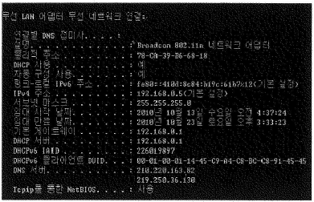
- IPv6는 주소의 크기가 32비트로 제한된다.
- IPv4는 주소의 크기가 64비트로 제한된다.
- IPv4는 주소의 크기가 32비트로 제한된다.
- IPv6는 주소의 크기가 256비트로 제한된다.
(정답률: 알수없음)
20. 영화관 음향 시스템이 85dB SPL/-20 dBFs로 조정 되었다면 최대 출력은 얼마까지 지원되어야 하는가?
- 95 dB SPL
- 100 dB SPL
- 1⑤ dB SPL
- 110 dB SPL
(정답률: 알수없음)
21. 기존의 JPEG 인코딩 기술보다 높은 압축 비율로 더 뛰어난 이미지 재생이 가능한 압축 기술로서 웨이브렛(Wavelet) 변환방식을 채용하고 있어 매우 큰 이미지 데이터를 상대적으로 작은 크기의 데이터로 압축할 수 있고 복사하지 않고도 하나의 파일 내에 여러 해상도로 저장된 이미지를 포함할 수 있는 계층적 구조를 가지고 있는 방식은?
- MPEG
- MPEG4
- JPEG2000
- Divx
(정답률: 알수없음)
22. 3D 시스템에 대한 설명 중 틀린 것은?
- Double Flash 는 영상의 3D 선명도가 떨어지고 Flicker 가 많아 관람객의 눈이 쉽게 피로해진다.
- 현재 사용되어 지고 있는 Cinema 용 DLP 제품은 아직 Triple Flash를 지원하지 못한다.
- Double Flash 의 Frame Rate Frequency 는 96:24 이다.
- Triple Flash 의 Frame Rate Frequency 는 144:24 이다.
(정답률: 알수없음)
23. 스크린원단이 갖고 있는 고유한 반사특성을 수치로 표시하는 스크린특성의 중요한 요소로서 이론적으로는 산화마그네슘이 코팅된 순백의 확산 판에 휘도계로 측정했을 때의 휘도를 1로 보았을 때 동일한 조건하의 스크린샘플의 휘도를 비교한 수치를 무엇이라고 하는가?
- 스크린 조도
- 스크린 게인
- 스크린 커브
- 스크린 틸트
(정답률: 알수없음)
24. 2개의 벽이 반사성이 있고 서로 마주보는 대칭면을 이루고 있을 때 두 벽사이의 거리와 주파수에 따라 정재파(Standing Wave)가 발생하게 된다. 이것을 무엇이라 하는가?
- 플러터 에코(Flutter Echo)
- 잔향(Reverberation)
- 암소음(BAckground Noise)
- 잡음 지수(Noise Criteria)
(정답률: 알수없음)
25. 아래의 보기는 HDCAM 미디어에 대한 설명이다. 틀린 것은?(문제 오류로 확정답안 발표시 3, 4번이 정답처리 되었습니다. 여기서는 3번을 누르시면 정답 처리 됩니다.)
- 해상도는 1920 × 1080 P를 지원한다.
- 4채널(2개의 AES/EBU 스테레오의 쌍)을 기록과 재생이 가능하다.
- HD-SDI(1.5Gbps) Dual Link를 지원한다.
- 8bit에서 컬러 Sub-Sampling 4:4:2을 지원시 전송속도는 135 Mbps 이다.
(정답률: 알수없음)
26. HD-SDI 케이블의 초당 전송속도로 맞는 것은?
- 270 Mbit/s
- 540 Mbit/s
- 1.485 Mbit/s
- 2.970 Mbit/s
(정답률: 알수없음)
27. 네트워크에 사용되는 모든 장비를 구분하기 위해 48비트(48개의 이진수)의 숫자를 부여한 물리적인 개념의 주소를 무엇이라 하는가?
- MAC(Media Access Control Address)
- Layer
- TCP/IP(Transpory Control Protocol/Internet Protocol)
- IP(Internet Protocol)
(정답률: 알수없음)
28. 복제 방지 기능의 저작권 보호 규격으로 최근 디스플레이 분야의 DVI 인터페이스에 기본적으로 지원하고 있는 것은?
- DCDM(Digital Cinema Distribution Master)
- KDM(Key Delivery Message)
- HDMI(High Definition Multimedia Interface)
- HDCP(Hige-Bandwidth Digital Content Protection)
(정답률: 알수없음)
29. 3D Digital Projector Calibation을 하기 위한 준비 작업 중 가장 올바른 것은?
- 3D 안경은 모든 제조사 공용으로 쓰이기 때문에 3D 시스템에 따라 구분할 필요가 없다.
- 컬러의 측정은 Left와 Right 가 같은 Gamut을 가지고 있으므로 한쪽을 선택해서 측정한다.
- 500시간 정도 사용한 Xeon Lamp를 정확히 측정하기 위해 새 Lamp로 교체한다.
- Xenon Lamp 설치 후 100시간 이상을 사용한 후에 실시한다.
(정답률: 알수없음)
30. 실리콘 웨이퍼 위헤 LCD의 액정을 올리는 방식으로 만드는 디스플레이 소자를 무엇이라 하는가?
- DMD
- GEM
- LCoS
- LED
(정답률: 알수없음)
3과목: 증폭기 및 녹음재생
31. 영화 상영 중 화면에 플리커가 생기면 가장 먼저 점검할 사항은?
- 정속 스프로켓
- 단속 스프로켓
- 가이드 롤러
- 셔터
(정답률: 알수없음)
32. 비가 온 후에 아스팔트 길위에 떨어진 얇은 기름방울이나 비눗방울에 의해 무지개 색의 무늬가 생기는 것을 흔히 볼 수 잇다. 이와 같은 현상과 관계가 깊은 것은?
- 빛의 반사
- 빛의 굴절
- 빛의 편광
- 빛의 간섭
(정답률: 알수없음)
33. 인간의 눈에서 볼록렌즈의 역할을 하는 곳은?
- 홍체
- 모양체
- 수정체
- 유리체
(정답률: 알수없음)
34. 일반 극장에서 주로 사용하고 있는 스크린은?
- 반사식 스크린
- 투과식 스크린
- 흡수식 스크린
- 굴절식 스크린
(정답률: 알수없음)
35. 간헐운동(間歇運動)장치에 대한 설명으로 가장 적절한 것은?
- 시각의 잔상효과를 이용하여 연속된 화면을 볼 수 있게 하기 위한 장치이다.
- 영사창과 렌즈의 거리를 조절하는 장치이다.
- 소리를 선명하게 듣기 위한 장치이다.
- 광원에서 나오는 빛을 단속시키는 장치이다.
(정답률: 알수없음)
36. 영사창의 재료로서 적합 하지 않은 것은?
- 가시광선 투과율이 높아야 한다.
- 컬러에 대한 왜곡율이 낮아야 한다.
- 표면 왜곡율이 낮아야 한다.
- 빛에 대한 반사율이 높아야 한다.
(정답률: 알수없음)
37. 사람 눈이 감지하는 가시광선 빛의 파장과 색상을 옳게 짝지은 것은?
- 380nm ~ 430nm : 노란색
- 460nm ~ 480nm : 노란색
- 500nm ~ 570nm : 녹색
- 640nm ~ 700nm : 녹색
(정답률: 알수없음)
38. 편광을 설명할 때 두 파동을 나누면 어떻게 되는가?
- 물질파, 횡파
- 굴절파. 종파
- 산란파, 회절파
- 종파, 횡파
(정답률: 알수없음)
39. 가시광선 중에서 굴절률이 가장 큰 색은?
- 적색
- 노란색
- 청색
- 보라색
(정답률: 알수없음)
40. 잔향시간에 관한 설명 중에서 틀린 것은?
- 음압레벨이 60dB 떨어질 때까지의 시간이다.
- 잔향시간은 체적이 비례한다.
- 잔향시간은 흡음률에 반비례한다.
- 1000Hz를 기준주파수로 측정한다.
(정답률: 알수없음)
41. 광원이 방출하는 빛의 색조를 물리적, 객관적 척도로 나타낸 것이며, 일반적으로 ( )가 낮으면 오렌지색에 가까운 따뜻한 기운이 있는 빛이 되고 ( )가 높아질수록 한낮의 태양광처럼 백색을 띄는 빛이 된다. ( )에 들어갈 내용으로 맞는 것은?
- 휘도
- 조도
- 광도
- 색온도
(정답률: 알수없음)
42. 렌즈의 중심에서 물체까지의 거리를 a, 상까지의 거리를 b, 초점거리를 f라 하면 이들의 관계식으로 옳은 것은?
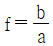
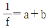
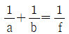
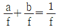
(정답률: 알수없음)
43. 다음 중 0.775V를 기준 전압으로 사용하는 dB의 단위는?
- dBm
- dBu
- dBV
- dBW
(정답률: 알수없음)
44. 옥타브당 동일한 에너지를 갖는 노이즈로 인간의 청감구조와 매칭이 좋아 스피커 계열장비의 측정 용도로 사용되는 것은?
- 화이트 노이즈
- 험 노이즈
- 핑크 노이즈
- 히스 노이즈
(정답률: 알수없음)
45. 다음 중 24bit 디지털 오디오의 다이나믹 레인지는?
- 82dB
- 85dB
- 124dB
- 144dB
(정답률: 알수없음)
4과목: 영사기와 필름의 구조원리
46. CP-650 Sound Processor Main Fader의 Step을 4에서 5로 올렸을 때 Output Level은 얼마나 변하는가?
- 1dB
- 2dB
- 3dB
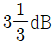
(정답률: 알수없음)
47. 5.1 채널 서라운드 시스템에서 서브 우퍼의 주파수 재생 대역은 얼마인가?
- 20-20000Hz
- 63-16000Hz
- 20-150Hz
- 70-7000Hz
(정답률: 알수없음)
48. 1/3 옥타브 리얼타임 오디오 스펙트럼 아날라이져에서 500Hz 다음의 주파수는 얼마인가?
- 580Hz
- 630Hz
- 700Hz
- 850Hz
(정답률: 알수없음)
49. 소리의 속도가 340m/s 이고 진동수가 1000Hz 일 때 이 음의 파장은 몇 [cm] 인가?
- 34
- 340
- 3400
- 340000
(정답률: 알수없음)
50. 주파수가 50[Hz]인 교류파형의 주기는?
- 10[ms]
- 20[ms]
- 40[ms]
- 50[ms]
(정답률: 알수없음)
51. 복합형 스피커의 분류로 적당하지 않은 것은?
- 2웨이 스피커시스템 : 저음용 + 고음용
- 2웨이 스피커시스템 : 중음용 + 고음용
- 2웨이 스피커시스템 : 저음용 + 중·고음용
- 3웨이 스피커시스템 : 저음용 + 중음용+고음용
(정답률: 알수없음)
52. 소리의 속도에 있어서 상온에서의 공기는 1℃ 온도가 올라가면 약 0.6m/s 음속이 빨라진다. 이러한 현상을 식으로 하였을 경우 옳은 것은?
- C = 331.6 – 0.6t
- C = 331.6 + 0.6t
- C = 331.6 + 0.6s
- C = 331.6 – 0.6s
(정답률: 알수없음)
53. 8Ω 스피커 4개를 8Ω 앰프 1대에 연결하려고 한다. 가장 효율적인 접속 방법은?
- 각각 2개씩 직렬연결 하고 다시 병렬 연결한다.
- 모두 4개를 병렬 연결한다.
- 모두 4개를 직렬 연결한다.
- 1개의 스피커가 8Ω 이므로 1개만 연결한다.
(정답률: 알수없음)
54. 어떤 부하에 흐르는 전류와 전압강하를 측정하려고 한다. 전류계와 전압계의 접속방법은?
- 전류계와 전압계를 부하에 모두 직렬로 접속한다.
- 전류계와 전압계를 부하에 모두 병렬로 접속한다.
- 전류계는 부하에 직렬, 전압계는 부하에 병렬로 접속한다.
- 전류계는 부하에 병렬, 전압계는 부하에 직렬로 접속한다.
(정답률: 알수없음)
55. 다음 중 교류회로의 피상전력을 구하는 식은?
- 전압×전류
- 전압×전류×역률
- 전압×전류×무효율
- 저항×전류
(정답률: 알수없음)
56. 다음 중 옴의 법칙에 대한 설명으로 옳은 것은? (단, 저항은 일정하다고 가정한다.)
- 전압은 전류에 비례한다.
- 전압은 전류에 반비례한다.
- 전압은 전류의 제곱에 비례한다.
- 전압은 전류의 제곱에 반비례한다.
(정답률: 알수없음)
57. 10[V]의 건전지에 저항을 접속하고 전류를 측정하였더니 0.5[A]였다. 저항값은 얼마인가?
- 10[Ω]
- 15[Ω]
- 20[Ω]
- 25[Ω]
(정답률: 알수없음)
58. 5[A], 100[V], 역률 0.8인 회로의 전력은 몇 [W] 인가?
- 300
- 400
- 500
- 600
(정답률: 알수없음)
59. 입력 전압이 100mV이고 출력 전압이 1V인 증폭기의 전압증폭도는?
- 10dB
- 20dB
- 40dB
- 100dB
(정답률: 알수없음)
60. 소비전력이 750[W]인 영사전구에 100[V]의 전압을 인가할 때 흐르는 전류는 몇 [A] 인가?
- 5.5[A]
- 6.5[A]
- 7.5[A]
- 9.5[A]
(정답률: 알수없음)